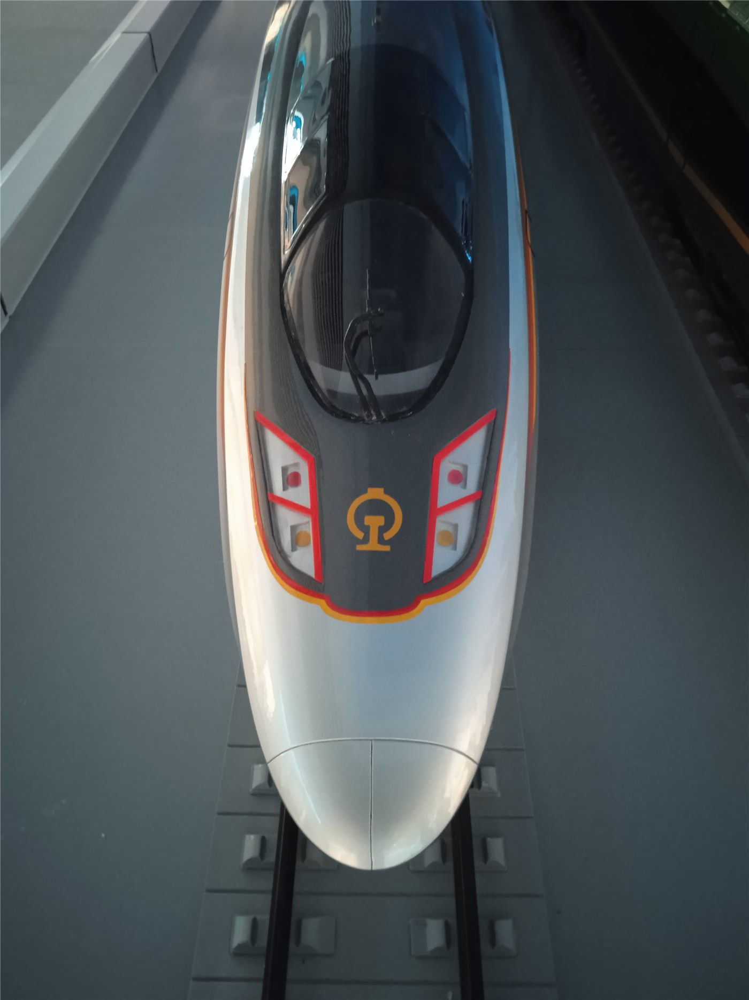

타이베이 지하철 신이선 동연장 30일 개통… 상산역 시종착 시대 마감
타이베이 첩운 신이선 동연장 구간이 30일 개통했다. 광츠·펑톈궁역이 새로 문을 열면서, 그동안 종착역이던 상산역에서 열차가 회차하던 운행 방식이 끝났다. 계획부터 개통까지 10년이 걸렸다.
형덕창 기자 · 2026.08.30
橋대만

타이베이 첩운(MRT) 신이선 동연장 구간이 30일 정식 개통했다. 광츠(廣慈)·펑톈궁(奉天宮)역이 새로 영업을 시작하면서 신이선의 종점이 상산역에서 동쪽으로 연장됐다.
광고 문의 · 300×250상산역을 출발하는 마지막 열차는 이날 오후 2시에 운행됐다. 2014년 신이선 개통 이후 12년 가까이 이어져 온 상산역 시종착 운행이 이로써 역사 속으로 들어갔다.
채석장 위에 지은 지하철
이 구간의 공사가 오래 걸린 데에는 지질 조건이 있었다. 노선이 지나는 지역이 과거 채석장 부지여서, 지반 조건이 구간마다 크게 달랐다. 시공을 담당한 기술진은 굴착 과정에서 예상과 다른 암반과 매립층을 반복적으로 만났다고 밝혔다.
이런 조건에서는 표준적인 터널 공법을 그대로 적용하기 어렵다. 구간별로 보강 방식을 달리하면서 공기가 늘어났다.
생활권 변화
새로 개통한 두 역 주변은 그동안 버스에 의존하던 주거지다. 펑톈궁역 인근에는 지역 신앙의 중심인 사당이 있어 참배객 이동도 많았다.
역세권 형성은 시간이 걸린다. 다만 개통 직후에는 통행 시간 단축이 즉시 체감되고, 이후 상권과 부동산 가격에 순차적으로 반영되는 것이 일반적인 경로다.
방문객에게
한국에서 타이베이를 찾는 여행객과 화인 방문객에게는 동부 지역 접근이 쉬워진다. 신이선은 타이베이101과 시청 일대를 지나는 노선이어서, 도심에서 동쪽 주거지까지 환승 없이 이동할 수 있게 됐다.
출처·참고 (사실 확인용 — 본문은 직접 재작성)
· 自由時報 2026-08-30
· 自由時報 2026-08-30